전파전자통신기사 (2003-08-10 기출문제)
1과목: 디지털전자회로
1. 디지털 클럭 발진회로에서 출력에 tHigh = 4[㎲]이고, tlow = 6[㎲]인 구형파를 얻었을 때 듀티 사이클은?
- 20 %
- 40 %
- 60 %
- 80 %
(정답률: 알수없음)

2. 다음 TR의 접속방식 중 틀린 것은?
- 전압,전류이득이 모두 1보다 큰것은 CE접속방식이다.
- CB접속방식은 전압이득이 거의 1이다.
- CC접속방식은 입력저항이 크고 출력저항이 작다.
- CB접속방식은 입력저항이 작고 출력저항이 크다.
(정답률: 알수없음)
3. 35 Bit의 두 2진수를 병렬가산하기 위해서는 최소한 몇개의 반가산기와 전가산기가 필요한가?
- 반가산기: 1개, 전가산기: 34개
- 반가산기: 2개, 전가산기: 33개
- 전가산기: 1개, 반가산기: 34개
- 전가산기: 2개, 반가산기: 33개
(정답률: 알수없음)
4. 그림의 복수 에미터 트랜지스터가 이루는 논리게이트는?
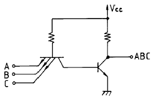
- TTL
- DTL
- DCTL
- RTL
(정답률: 알수없음)
5. 이상적인 연산증폭기의 조건으로서 옳지 않은 것은?
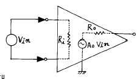
- 전압증폭도가 무한대
- 입력 임피이던스가 무한대
- 출력 임피이던스가 무한대
- 주파수 대역폭이 무한대
(정답률: 알수없음)
6. 다음 OP Amp 회로의 전압증폭도 Av 값은?
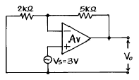
- 2.5
- 3.5
- 1.4
- 10.5
(정답률: 알수없음)
7. 차동 증폭기의 동상제거비(common mode rejection ratio)의 설명 중 틀린 것은?
- 동상입력의 이득에 대한 이상입력의 이득의 비를 말한다.
- 이 값이 클수록 차동 증폭기의 성능이 좋다.
- 차동 증폭기의 동상 입력에 대한 오차를 알수 있는 매개수가 된다.
- 회로의 안정도면에서는 이 값이 작을수록 유리하다.
(정답률: 알수없음)
8. 그림과 같은 직선 검파회로에서 diagonal clipping이 생기는 이유로서 옳은 것은? (단, ma는 변조지수, Ws는 변조신호의 각주파수)
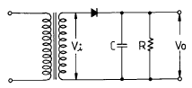
- 시정수 RC가 너무작기 때문
- 시정수 RC가 너무크기 때문
- RC > 1/(ma· Ws)
- RC ≫ 1/(ma· Ws)
(정답률: 알수없음)
9. 포스터 실리(Foster-Seeley)회로의 사용 목적은?
- AM 복조
- FM 변조
- AM 변조
- FM 복조
(정답률: 알수없음)
10. 그림과 같은 슬라이스(slice) 회로의 출력파형은? (단, 입력은 E sin ωt[V]이다.)
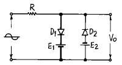
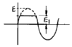
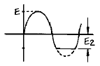
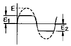
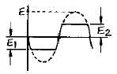
(정답률: 알수없음)
11. 논리식
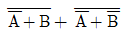
을 간단히 하면?- A
- B
- AB
- A+B
(정답률: 알수없음)
12. 그림의 논리회로를 간소화하였을 때 출력 X는?
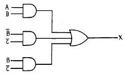
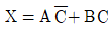
- X = A+B
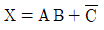
- X = AB
(정답률: 알수없음)
13. 변환하고자 하는 입력전압은 0[V]에서 15[V]일 때, 몇 BIT의 A/D변환기를 사용해야하는 것이 가장 좋은가? (단, 분해능은 3.66[mV] 이다.)
- 10 BIT
- 12 BIT
- 14 BIT
- 16 BIT
(정답률: 알수없음)
14. Exclusive-OR 게이트의 입력 A, B, C에 대한 출력 진리값 중 틀린 것은? (단, F = A ⊕ B ⊕ C )
- 0 = 0 ⊕ 0 ⊕ 0
- 1 = 0 ⊕ 0 ⊕ 1
- 1 = 0 ⊕ 1 ⊕ 1
- 1 = 1 ⊕ 1 ⊕ 1
(정답률: 알수없음)
15. 그림의 정전압회로에서 V가 25∼28[V]의 범위에서 변동한다. zener diode 전류 ID의 변화는? (단, RL=1[kΩ ], V=28[V], VL=20[V]이다.)
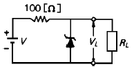
- 30∼50[mA]
- 30∼60[mA]
- 10∼50[mA]
- 10∼60[mA]
(정답률: 알수없음)
16. 그림과 같은 발진회로의 발진 주파수는?
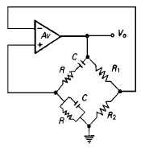
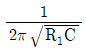
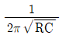
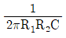
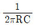
(정답률: 알수없음)
17. 아날로그-디지탈 변환에 유효하게 사용되는 코드는?
- BCD 코드
- 3초과 코드
- 그레이 코드
- 링 카운터 코드
(정답률: 알수없음)
18. 10진수의 4에 해당하는 4비트 그레이 코드(gray code)는 다음 중 어느 것인가?
- 0100
- 0111
- 1000
- 0110
(정답률: 알수없음)
19. 증폭기의 전압이득이 증가할 때 대역폭은?
- 영향을 받지 않는다.
- 증가한다.
- 감소한다.
- 일그러진다.
(정답률: 알수없음)
20. 주파수 변조에서 S/N 비를 개선하기 위한 방법으로 적당치 않은 것은?
- 신호파의 진폭을 크게 한다.
- 변조지수 mf를 크게 한다.
- 프리엠파시스를 사용한다.
- 주파수 대역폭을 크게 한다.
(정답률: 알수없음)
2과목: 무선통신기기
21. 레이더에서 발사된 펄스 전파가 8[㎲]후에 목표물에서 반사되어 되돌아 왔다. 목표물까지의 거리는?
- 2400[m]
- 1200[m]
- 800[m]
- 600[m]
(정답률: 알수없음)
22. 다음중 통신위성체의 TT&C 시스템에서 행하는 일과 거리가 먼 것은?
- Telemetry 정보의 수집
- 위성관제소의 명령을 수행
- 주파수의 변환
- Telemetry 정보의 송신
(정답률: 알수없음)
23. 아래의 회로에서 출력전압의 변동분을 분담하여 보상한 소자는?
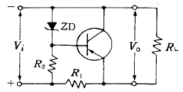
- R1
- R2
- RL
- ZD
(정답률: 알수없음)
24. 무선송신기의 송신주파수 변동을 줄이기 위한 대책이 아닌 것은?
- 발진기와 출력단 사이에 완충증폭기를 넣는다.
- 발진기와 코일과 콘덴서의 온도계수를 상쇄하도록 부품을 선택한다.
- 전원의 안정도를 높인다.
- 발진기의 동조회로에 Q가 낮은 부품을 선택한다.
(정답률: 알수없음)
25. 다음은 Ring 변조기의 동작원리를 설명한 것이다. 잘못 표현된 것은?
- 변조기 출력에는 반송파가 제거되고 상,하측대파만 나온다.
- 반송파가 인가되지 않으면 변조 신호만 나타난다.
- Ring변조기를 복조기로도 사용할 수 있다.
- 반송파만 인가되면 출력에는 아무것도 나타나지 않는다.
(정답률: 알수없음)
26. 디지털 무선통신방식에서 클럭추출의 간이화 및 스펙트럼의 평활화를 위해 필요한 기능은?
- 스크램블, 디스크램블(Scramble, Descramble)
- 패턴지터(Systematic Jitter)
- 에러정정기(FEC)
- 위상동기 발진기(PLO)
(정답률: 알수없음)
27. 다음중 통신위성의 원리와 거리가 먼 것은?
- 만유인력법칙
- 지구의 자전주기
- 지구의 공전주기
- 궤도운동
(정답률: 알수없음)
28. 스퓨리어스(Spurious)복사의 방지방법이 아닌 것은?
- 전력 증폭단의 여진전압을 높인다.
- 국부발진기의 출력에 포함된 고조파를 적게한다.
- 동조회로의 Q를 높게 한다.
- 급전선에 트랩을 설치한다.
(정답률: 알수없음)
29. DBS(Direct Broadcasting Satellite)에 대한 설명중 틀린 것은?
- 방송 위성은 정지궤도 위성을 이용한다.
- 한 개의 위성으로 한반도 전체에 서비스할 수 있다.
- 사용 주파수 대역은 V/UHF 대역을 사용한다.
- 가정에서는 소형 파라보라 안테나를 사용한다.
(정답률: 알수없음)
30. 초단파대 범위의 FM송신기 전력측정에 가장 적당한 것은?
- CM형 방향성 결합기에 의한 방법
- 수부하에 의한 방법
- 열방사계에 의한 방법
- 전구의 조도에 의한 방법
(정답률: 알수없음)
31. 아래의 회로는 포스터-실리(Foster-Seeley) 검파기이다. 회로의 구성상태 중 잘못 설명한 것은?
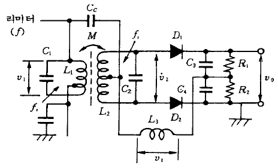
- 1차측 동조회로 L1, C1 및 2차측 동조회로 L2, C2는 FM파의 중심주파수에 동조되어야 함.
- 1차측 동조회로의 코일 L1과 2차측 동조회로 L2는 유도결합 되어 있으며, 결합계수는 크지 않음.
- 무선주파 쵸크 L3는 고주파에서 개방, 신호주파수에서는 단락상태가 될 수 있도록 선정함.
- 1차측 전압 V1과 2차측 전압 V2는 FM파의 중심주파수 fi에서 180[도]의 위상차가 되도록 함.
(정답률: 알수없음)
32. PM을 등가 FM으로 만들기 위하여 사용되는 회로는?
- pre-emphasis회로
- pre-distorter회로
- de-emphasis회로
- IDC회로
(정답률: 알수없음)
33. 슈퍼 헤테로다인 수신기의 중간 주파수(IF)를 선정할 때 고려되는 사항으로 틀린 것은?
- 안정도 : 중간주파수(IF)가 낮은 것이 좋다.
- 지연특성 : 중간주파수(IF)가 높을수록 좋다.
- 근접 주파수 선택도 : 중간주파수(IF)가 높을수록 좋다.
- 영상 혼신 : 중간주파수(IF)가 높을수록 좋다.
(정답률: 알수없음)
34. 무선 통신용 송신기에서 입력신호를 변조(Modulation)하는 가장 타당한 이유는?
- 전송매개체와 신호를 정합(Matching)시키기 위해
- 주파수를 높이기 위해
- 수신기에서 받는 신호를 변환할 필요가 없기 때문에
- 실제 구현시 회로가 간단하기 때문에
(정답률: 알수없음)
35. SAW(Surface Acoustic Wave)필터의 장점이 아닌 것은?
- 우수한 주파수 특성과 위상특성
- 저 삽입손실
- 고신뢰성
- 우수한 LPF 특성
(정답률: 알수없음)
36. 그림은 전원 정류회로의 리플(ripple)함유율을 측정하는 회로이다. 저항 R을 조정하여 전류계의 지시가 정격전류가 되었을 때 전압계 V1과 V2의 지시값이 120[V] 및 6[V]라면 리플 함유율은 얼마인가?
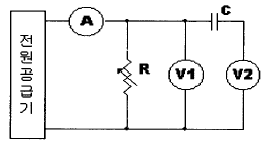
- 5%
- 2%
- 10%
- 8%
(정답률: 알수없음)
37. AM 방송국은 보통 540KHz에서 1600KHz의 주파수범위를 사용하고 있으며 대역폭은 10KHz이다. AM 라디오 수신기의 RF필터의 최소 대역폭은 얼마인가?
- 1600KHz
- 540KHz
- 2140KHz
- 10KHz
(정답률: 알수없음)
38. 기전력 2V, 내부저항 0.1Ω 인 전지가 100개 있다. 이 전지를 전부사용하여 2.5Ω 의 부하저항에 최대 전류를 흘리기 위한 전지의 접속 방법은?
- 100 개의 전지를 직렬로 접속
- 50 개의 전지를 직렬로 접속한 후 2 개조를 병렬로 접속
- 25 개의 전지를 직렬로 접속한 후 4 개조를 병렬로 접속
- 20 개의 전지를 직렬로 접속한 후 5 개조를 병렬로 접속
(정답률: 알수없음)
39. CDMA통신에 대한 설명중 가장 옳은 것은?
- 이 방식은 동기가 필요없이 코드만 식별되면 통신이 된다.
- CDMA에서는 캐리어 주파수분할이 필요없다.
- PN코드의 동기만 맞으면 통신이 된다.
- 각 가입자별로 고유의 PN 코드를 할당하는 방식이다.
(정답률: 알수없음)
40. 스펙트럼 분석기로 각종 발진기를 측정하였을 때 가장 이상적인 발진기의 상태는?
- 거의 균일한 크기의 스펙트럼이 많이 나타났다.
- 중앙의 스펙트럼이 유난히 작고 주위의 스펙트럼이 매우 크다.
- 중앙의 스펙트럼이 매우 크며 주위에 매우 미소한 스펙트럼 분포
- 전체적으로 대칭상태의 많은 스펙트럼의 분포
(정답률: 알수없음)
3과목: 안테나공학
41. 다음 안테나 중에서 가장 광대역 특성을 갖는 것은 어느 것인가?
- 폴디드 다이폴 안테나(folded dipole antenna)
- 혼 안테나(horn antenna)
- 롬빅 안테나(rhombic antenna)
- 대수주기 안테나(log periodic antenna)
(정답률: 알수없음)
42. 도파관 창(Waveguide Window)은 무슨 기능을 하는가?
- 도파관에 이물질이 들어가지 않도록 한다.
- 도파관의 임피던스를 변화시킨다.
- 도파관내의 반사파를 감쇠시킨다.
- 도파관의 비틀림을 용이하게 한다.
(정답률: 알수없음)
43. HF대를 이용한 장거리 통신에 가장 적합한 전파 방식은?
- 회절파
- 지상파
- 대류전파
- 전리층파
(정답률: 알수없음)
44. 동축급전선을 개방하고 임피던스를 측정하였을 때 100[Ω]이고, 단락 했을 때의 임피던스가 25[Ω]라면 이 급전선의 특성임피던스는 얼마인가?
- 100[Ω]
- 75[Ω]
- 50[Ω]
- 25[Ω]
(정답률: 알수없음)
45. 지상 높이가 같은 역 L형 안테나와 수직 안테나를 비교하면 역 L형 안테나 쪽이 실효고가 높은데 그 이유는?
- 공진이 날카롭기 때문이다.
- 접지저항이 작기 때문이다.
- 상부의 정전용량이 증가하기 때문이다.
- 도체저항이 작기 때문이다.
(정답률: 알수없음)
46. 다음 중 공전(空電)의 특징이 아닌 것은?
- 주로 초단파 통신에 방해를 주며 200[GHz]이상에서는 문제가 되지 않는다.
- 장파대의 공전은 겨울보다 여름에 자주 나타나며 강도도 크다.
- 공전은 적도 부근에서 가장 격렬히 발생한다.
- 단파대에서는 한밤중 전후에 최대이고 정오경에 최소가 된다.
(정답률: 알수없음)
47. λ/4 수직 접지 안테나의 길이(ℓ)가 λ/4 < ℓ < λ/2 일 때 무엇을 삽입하여 안테나를 공진시키는가?
- 연장 코일(coil)
- 단축콘덴서 (condenser)
- 안테나는 분포정수 회로이므로 항상 공진되어 있다.
- 저항과 코일(coil)을 직렬로 연결한다.
(정답률: 알수없음)
48. 대기의 작은 기단군(氣團群), 난류 등에 의해 초가시거리 전파에서 가장 심하게 수반하는 페이딩(fading)은?
- 감쇠형
- K 형
- 신틸레이션(scintillation)형
- 산란파형
(정답률: 알수없음)
49. 다음 동조급전선에 관한 설명중 적당하지 않은 것은?
- 급전선에는 정재파가 있다.
- 송신기와의 결합은 LC공진회로를 사용 할 수 있다.
- 전송효율이 가장 좋고 송신기와의 결합이 간단하다.
- 선로의 길이에 제약을 받는다.
(정답률: 알수없음)
50. 주파수 30[㎒],전계강도 40[㎷/m]인 전파를 λ /4 수직 접 지 안테나로 수신했을 때 안테나에 유기되는 기전력은? (단, 대지는 완전도체로 가정한다.)
- 0.318[㎷]
- 6.36[㎷]
- 31.8[㎷]
- 63.6[㎷]
(정답률: 알수없음)
51. 안테나를 설계할 때 반사기를 붙이는 이유는?
- 임피던스 정합을 위해
- 광대역화를 위해
- 접지저항을 적게 하기 위해
- 전파를 한 방향으로 보내기 위해
(정답률: 알수없음)
52. 마이크로웨이브(microwave) 통신의 장점이 아닌 것은?
- 광대역 통신이 가능하며 사용주파수의 범위가 넓다.
- 외부잡음의 영향이 적고 PTP(point to point)통신이 가능하다.
- 전리층을 통과하여 전파하며 중계기 없이도 원거리 통신이 가능하다.
- 예민한 지향성과 고이득을 가진 안테나를 사용하여 간섭을 적게 할 수 있다.
(정답률: 알수없음)
53. 대류권 산란파의 특징 중 잘못된 것은?
- 적당한 주파수파수는 200[MHz]∼3,000[MHz]이다.
- 아주 첨예한 지향특성을 갖는 안테나가 필요하다.
- 지리적 조건의 제한을 받지 않는다.
- 다이버시티방식에 의해서 실용화가 가능하다.
(정답률: 알수없음)
54. 파라볼라 안테나의 절대이득을 계산하는 식은? (η : 개구 효율, D : 파라볼라의 직경, λ : 파장)
- ηπ2D/λ
- η(πD/λ)2
- η(λ/πD)2
- ηλ/(πD)2
(정답률: 알수없음)
55. 다음중 무손실 선로에서 얻어지는 조건은?
- R = 0 , G = ∞
- R = ∞ , G = 0
- R = ∞ , G = ∞
- R = 0 , G = 0
(정답률: 알수없음)
56. 반파장 다이폴 안테나의 지향성 계수는?
- sin(π sinθ)/cosθ
- cos(π/2 cosθ)/sinθ
- cos(π cosθ)/sinθ
- sin(π cosθ)/sinθ
(정답률: 알수없음)
57. 전파의 속도는 매질의 다음 어느 량에 따라서 변화되는가?
- 점도와 밀도
- 밀도와 도전율
- 도전율과 유전율
- 유전율과 투자율
(정답률: 알수없음)
58. 접지 안테나의 복사저항이 36.6[Ω]이고 접지저항이 4.4[Ω]이며 그외의 손실저항이 10[Ω]이다. 이 안테나의 효율은?
- 63[%]
- 72[%]
- 78[%]
- 89[%]
(정답률: 알수없음)
59. 3개의 도체를 사용하여 3단의 폴디드(folded) 안테나를 구성할 경우 복사저항은 얼마인가?
- 73[Ω]
- 110[Ω]
- 292[ ]
- 658[Ω]
(정답률: 알수없음)
60. 다음 안테나 중에서 자기상사형이 아닌 것은?
- 쌍원추형(biconical) 안테나
- 대수주기형(log periodic) 안테나
- 스파이럴 슬롯(spiral slot) 안테나
- 원통 슬롯(slot) 안테나
(정답률: 알수없음)
4과목: 통신영어 및 교통지리
61. Choose the correct one to fill in the blank of the following sentence.
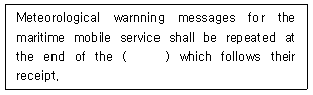
- working hours
- first silence period
- silence period
- traffic list
(정답률: 알수없음)
62. 다음 무선국들 중 GULF OF MEXICO 해역에 위치해 있지 않은 단파 해안국은?
- OCEAN GATE RADIO
- VERACRUZ RADIO
- SLIDELL RADIO
- MOBILE RADIO
(정답률: 알수없음)
63. Fill in the blank with correct one.
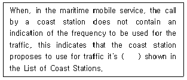
- calling frequency
- working frequency
- normal calling frequency
- normal working frequency
(정답률: 알수없음)
64. Choose the best translation into English of the following Korean sentence.
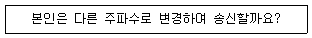
- Should I change to transmission on another frequency?
- Shall I change to transmission on another frequency?
- Would you change to transmission on another frequency?
- Will you change to transmission on another frequency?
(정답률: 알수없음)
65. There are abbreviations or signs which shall be used for entries in the service log.
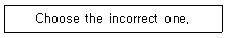
- FC: Communications Satellite Space Station
- ER: Space Telemetering Space Station
- TC: Communication Satellite Earth Station
- SM: Meteorological Satellite Earth Station
(정답률: 알수없음)
66. Choose the wrong translation of the underlined parts.
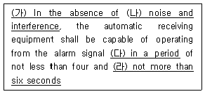
- 없을 때는
- 잡음과 공전
- 시간 동안
- 6초 이내로
(정답률: 알수없음)
67. 다음 AUSTRALIA 지도상의 •표시의 번호는 공중통신업무를 취급하는 해안국의 위치를 표시한 것이다. ADELAICE RADIO는 어느 것인가?
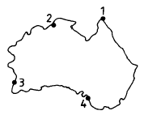
- 1
- 2
- 3
- 4
(정답률: 알수없음)
68. 대서양을 통신권으로 하는 해안지구국으로서 Italy 소속 지구국은?
- FUCINO
- THERMOPYLAE
- ROME
- NAPOLI
(정답률: 알수없음)
69. Choose the incorrect one in the following phonetic alphabet.
- C : CHAR LEE
- I : IN DEE AH
- J : JEW LEE ETT
- P : PAH PAH
(정답률: 알수없음)
70. 다음 문장이 설명하는 단어 또는 어휘를 고르시오.
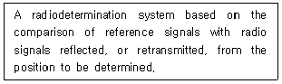
- Period
- Station
- Radar
- Television
(정답률: 알수없음)
71. 온난한 기단이 한냉한 기단 위로 올라가서 생기는 전선으로 이 전선부근에는 비가오는 지역이 넓다. 이러한 기상 전선은?
- Warm Front
- Cold Front
- Stationary Front
- Occluded Front
(정답률: 알수없음)
72. Choose the one which is correct in the blank.
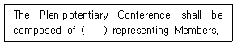
- delegate
- delegations
- experts
- representative
(정답률: 알수없음)
73. Choose the correct one in the blank in following sentence.
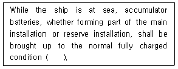
- monthly
- weekly
- daily
- hourly
(정답률: 알수없음)
74. Choose a correct word for the blank to complete the translation below.
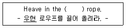
- port
- starboard
- fore
- stern
(정답률: 알수없음)
75. 다음중 일본 Honshu에 위치하고 있지 않은 항구는?
- Sakai
- Sendai
- Kashima
- Davao
(정답률: 알수없음)
76. Choose the correct pronunciation of "2" in English mode.
- BISSOTOO
- BEES-SOH-TOO
- BEE-SSO-TU
- BEE-SO-TWO
(정답률: 알수없음)
77. AFRICA 동쪽 인도양 연안의 기상방송 Nairobi Radio국이 있으며, 해안국으로는 Mombasa Radio 가 있는 국가는?
- REPUBLIC OF VENEZUELA
- REPUBLIC OF KENYA
- REPUBLIC OF SENEGAL
- SOUTH AFRICA
(정답률: 알수없음)
78. What letters or test signal do you send for testing your radiotelegraphy transmitter?
- VVV
- TTT
- XXX
- EX
(정답률: 알수없음)
79. Select the most similar meaning in the underlined part of the following sentence.
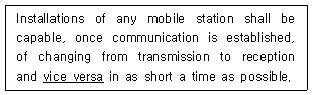
- From reception to transmission
- From changing to receive
- Communication is established
- Installations of any mobile station
(정답률: 알수없음)
80. 호출부호 6MW는 다음중 어느 항무통신국의 호출부호인가?
- 항무충무
- 항무인천
- 항무울산
- 항무여수
(정답률: 알수없음)
5과목: 전파관계법규
81. 다음 중 이동업무와 관계 없는 것은?
- 기지국과 육상 이동국간의 통신
- 육상국 상호간의 통신
- 이동국 상호간의 통신
- 선박국과 해안국 간의 통신
(정답률: 알수없음)
82. 다음중 안전통신의 사용 전파는?
- 긴급통신전파
- 조난통신전파
- 통상통신전파
- 항행경보신호전파
(정답률: 알수없음)
83. 국제전기통신연합 전권위원회의에 관한 설명으로 틀린 것은?
- 회원국을 대표하는 대표단으로 구성된다.
- 전권위원회의 회의는 5년마다 개최된다.
- 연합의 목적을 달성하기 위한 전반적인 정책을 결정한다.
- 연합의 사무총장, 사무차장 및 각 국장을 선출한다.
(정답률: 알수없음)
84. 무선국 변경허가사항이 아닌 것은?
- 무선국의 목적
- 통신의 상대방 및 통신사항
- 운용허용시간
- 무선종사자의 자격과 정원
(정답률: 알수없음)
85. 다음중 무선통신의 원칙과 거리가 먼 것은?
- 정확하게 송신한다.
- 통신상 오류를 인지한 때에는 즉시 정정한다.
- 무선통신에 사용하는 용어는 가능한 한 자세하고 쉬운 용어를 쓴다.
- 필요한 최소한의 사항만을 교신한다.
(정답률: 알수없음)
86. 전파규칙(RR)에서 정하는 전력의 단위가 아닌 것은?
- 최대전력(PK)
- 첨두포락선전력(PX)
- 평균전력(PY)
- 반송파전력(PZ)
(정답률: 알수없음)
87. 통신보안에 관한 사항을 준수해야 할 의무와 가장 관계 없는 사람은?
- 시설자
- 무선통신업무에 종사하는 자
- 무선설비를 이용하는 자
- 무선설비 제작자
(정답률: 알수없음)
88. 무선국 허가의 유효기간중 틀린 것은?
- 방송국 - 3년
- 일반해안국 - 5년
- 실용화시험국 - 1년
- 의무항공기국 - 무기한
(정답률: 알수없음)
89. 다음 중 국제전기통신연합의 조직기관이 아닌 것은?
- 국제주파수등록위원회의
- 이사회
- 전권위원회의
- 국제전기통신세계회의
(정답률: 알수없음)
90. 제반 보안 자료의 탈취,탐지,촬영,관찰 및 복사 등을 방지하기 위한 대책 중 비인가자 접근 방지책이 아닌 것은?
- 교육계획 수립 및 실시
- 허술한 창문에는 철창 가설
- 통신소 내부 투시 방지
- 통신소 출입문에 보호 구역 표시
(정답률: 알수없음)
91. 다음의 통신수단 가운데에서 취약점이 아닌 것은?
- 전령통신은 도청에 의해 정보유출의 우려가 있다.
- 우편통신은 정보를 탐지하려는 자로 부터 피습당할 우려가 있다.
- 시호통신은 제 3자의 방해를 당할 우려가 있다.
- 음향통신은 신호누설에 의한 기만 및 역이용 당할 우려가 있다.
(정답률: 알수없음)
92. 통신보안의 목적중 획득하려는 정보를 최대한으로 지연시키는 방법은?
- 통신제원을 변경
- 암호, 음어를 사용
- 비밀내용의 취급을 제한
- 통신약부호를 사용
(정답률: 알수없음)
93. 방해 통신에 대한 방어책과 거리가 먼 것은?
- 예비용 주파수로 전환한다.
- 불필요한 전파발사를 억제한다.
- 고출력으로 전파를 발사한다.
- 통신제원을 보안유지한다.
(정답률: 알수없음)
94. 실효복사 전력에 대한 설명으로 맞는 것은?
- 공중선 전력에 주어진 방향에서 수직접지안테나의 상대이득을 곱한 것을 말한다.
- 공중선 전력에 주어진 방향에서 반파다이폴의 절대이득을 곱한 것을 말한다.
- 공중선 전력에 주어진 방향에서 반파다이폴의 상대이득을 곱한 것을 말한다.
- 공중선 전력에 주어진 방향에서 수직 접지 안테나의 절대이득을 곱한 것을 말한다.
(정답률: 알수없음)
95. 다음 중 ITU 회원국의 권리로서 맞지 않는 것은?
- 연합 각 분야의 모든회합에 참관자로의 참석권
- 전파관리위원회 위원의 선거의 후보자지명권
- 연합 이사회의 피선거권
- 연합의 회의 참가권
(정답률: 알수없음)
96. 실험무선국의 개설허가 유효기간은?
- 1년
- 2년
- 3년
- 4년
(정답률: 알수없음)
97. 주파수대역중 통신보안상 가장 불리한 주파수 대역은?
- 장파(LF)
- 중파(MF)
- 단파(HF)
- 초단파(VHF)
(정답률: 알수없음)
98. 다음에 열거한 보안자재중 보안 목적에 적합치 않은 자재는 무엇인가?
- 암호자재
- 음어자재
- 약어자재
- 약호자재
(정답률: 알수없음)
99. 선박국의 조난통보에 포함되지 않아도 좋은 것은?
- 조난의 위치
- 조난의 종류
- 희망하는 구조방법
- 대기속도
(정답률: 알수없음)
100. 원칙적으로 주파수할당을 받은 날부터 어느 기간 이후에 주파수 이용권을 양도할 수 있는가?
- 1년
- 2년
- 3년
- 5년
(정답률: 알수없음)
주기(T) = tHigh + tlow = 4[㎲] + 6[㎲] = 10[㎲]
드뷰토의 정의에 따라 듀티 사이클(D)은 다음과 같이 계산할 수 있다.
D = tHigh / T x 100%
D = 4[㎲] / 10[㎲] x 100% = 40%
따라서 정답은 "40 %"이다.